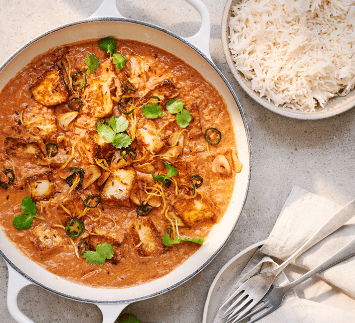

приготовление:
-
Поставить вариться рис.
-
Разогреть 1 ст.л. растительного масла в большой сковороде на среднем огне. Нарезать и добавить 1 крупную луковицу и готовите около 5 минут, пока не станет прозрачным.
-
Почистить 2 зубчика чеснока и выдавить в сковороду, натереть кусочек имбиря размером с большой палец, добавьте в сковороду. Готовить еще 2 минуты, часто помешивая, пока они не станут ароматными. Всыпать 2 ч.л. молотого кумина, 2 ч.л. молотого кориандра, 1 ч.л. куркумы, и готовить еще 2 минуты. Влить 400 гр. консервированных помидоров и хорошо перемешать. Тушить 5-7 минут, пока смесь не загустеет.
-
Уменьшить огонь и добавить 100 мл. сливок. Тушите на медленном огне 3-4 минуты, пока не загустеет, помешивая.
-
Пока соус тушится, разогреть 1 ст.л. масла в отдельной сковороде на средне-высоком огне. Нарезать 225 гр. халлуми на кусочки размером с укус , обжарить 3-4 минуты, пока он не станет золотистым со всех сторон.
-
Когда халлуми пожарен, добавить его в соус вместе с 80 гр. свежего или замороженного молодого шпината, 2 ч.л. сахара, 1 ст.л. гарам масала, перемешайте. Тушить на медленном огне 5 минут, пока шпинат не завянет или разморозится. Если карри кажется слишком густым, добавить каплю воды или еще сливок.
-
Посыпать 1 ч.л. чернушки (nigella seeds) и подавать с рисом.